19 Nominal Predictors
19.1 Fruit flies Study
A study of fruit flies (Hanley & Shapiro, 1994) considered whether the female companions (none, 1 pregnant, 8 pregnant, 1 virgin, or 8 virgin) is associated with differences in longevity of males (measured in days).
gf_violin(longevity ~ group, data = FruitflyReduced) %>%
gf_jitter(width = 0.2, height = 0, alpha = 0.5) %>%
gf_point(stat = "summary", color = "red", size = 3, alpha = 0.5, fun = mean)## No summary function supplied, defaulting to `mean_se()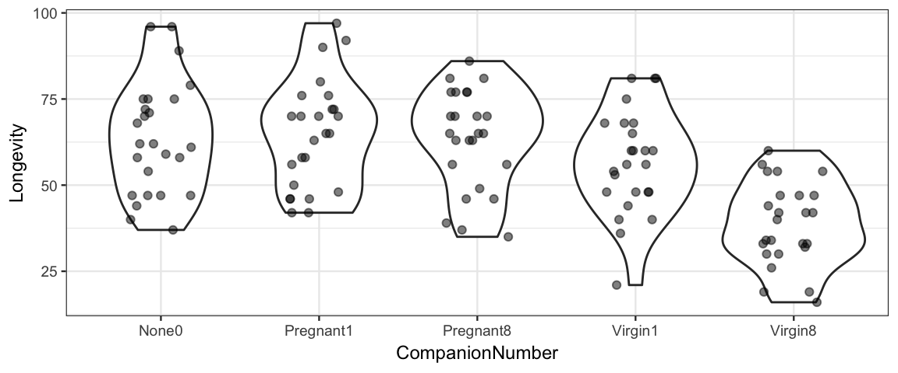
19.2 Model 1: Out-of-the-box
It is easy enough to ask brm() to fit a model for us. Let’s just give it our
explanatory and response variables and see what happens.
flies_brm <- brm(longevity ~ group, data = FruitflyReduced)## Compiling the C++ model## Start samplingflies_stan <- stanfit(flies_brm)
flies_stan## Inference for Stan model: 2838b68e72ce876b17fbd0e486bccf49.
## 4 chains, each with iter=2000; warmup=1000; thin=1;
## post-warmup draws per chain=1000, total post-warmup draws=4000.
##
## mean se_mean sd 2.5% 25% 50% 75% 97.5% n_eff Rhat
## b_Intercept 63.59 0.06 3.00 57.62 61.64 63.63 65.57 69.59 2664 1
## b_groupPregnant1 1.21 0.08 4.22 -7.07 -1.68 1.16 3.98 9.56 2869 1
## b_groupPregnant8 -0.22 0.08 4.27 -8.67 -3.08 -0.23 2.66 7.87 2891 1
## b_groupVirgin1 -6.89 0.08 4.19 -14.97 -9.72 -7.00 -4.10 1.56 2998 1
## b_groupVirgin8 -24.83 0.08 4.23 -32.98 -27.52 -24.85 -22.06 -16.37 2955 1
## sigma 14.90 0.02 0.96 13.16 14.24 14.87 15.50 16.93 3841 1
## lp__ -519.59 0.04 1.77 -523.77 -520.54 -519.25 -518.29 -517.15 1802 1
##
## Samples were drawn using NUTS(diag_e) at Wed Apr 24 08:17:00 2019.
## For each parameter, n_eff is a crude measure of effective sample size,
## and Rhat is the potential scale reduction factor on split chains (at
## convergence, Rhat=1).mcmc_combo(as.mcmc.list(flies_stan))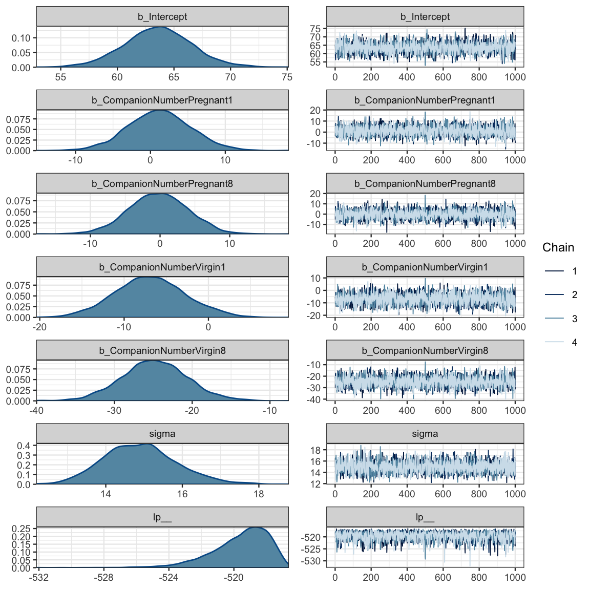
mcmc_areas_ridges(as.mcmc.list(flies_stan), regex_pars = "b_g")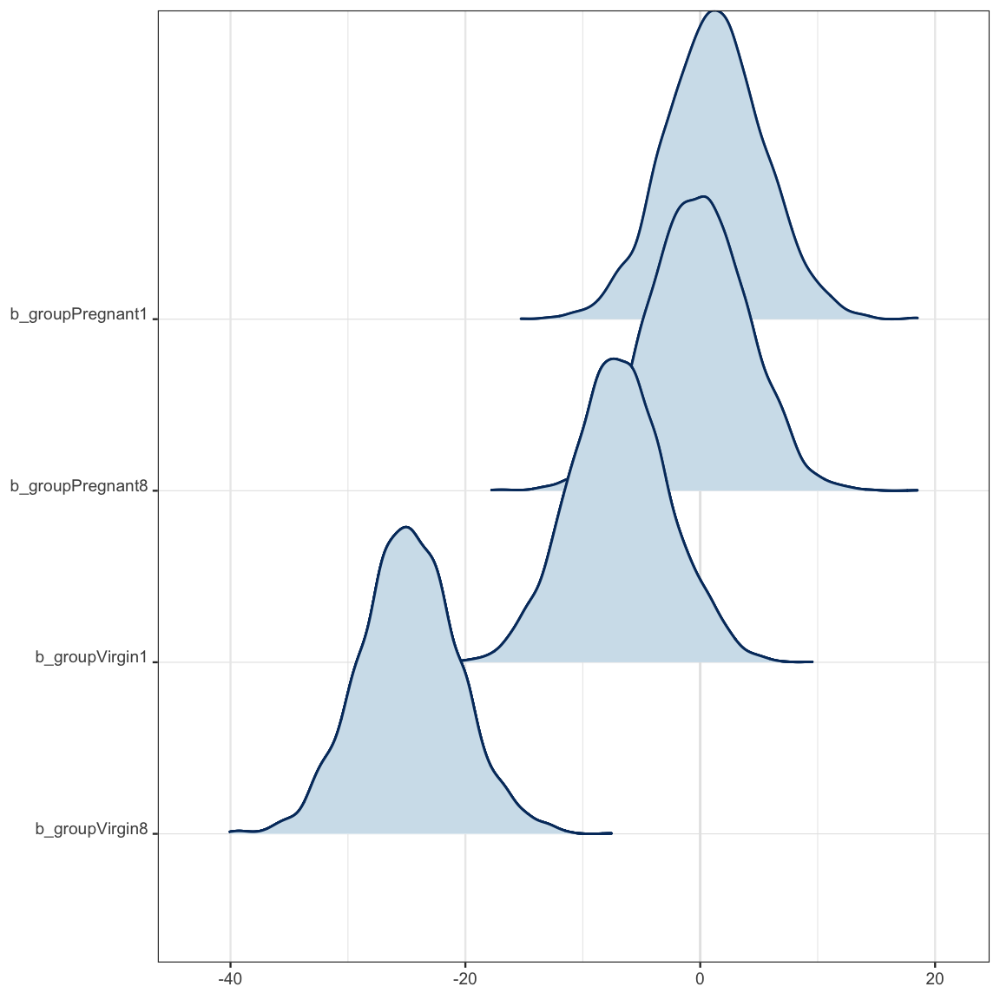
But what just happened? Why do we have 5 parameters starting with b_?
Our first clue comes from looking at the data that get sent to Stan.
standata(flies_brm) %>% lapply(head)## $N
## [1] 125
##
## $Y
## [1] 35 37 49 46 63 39
##
## $K
## [1] 5
##
## $X
## Intercept groupPregnant1 groupPregnant8 groupVirgin1 groupVirgin8
## 1 1 0 1 0 0
## 2 1 0 1 0 0
## 3 1 0 1 0 0
## 4 1 0 1 0 0
## 5 1 0 1 0 0
## 6 1 0 1 0 0
##
## $prior_only
## [1] 0Our group variable has been turned into 4 (really 5, if you count
the intercept, which is all 1’s) new 0/1 variables. So our model is
\[\begin{align*} \mathrm{longevity} &= \beta_0 \cdot 1 + \beta_1 x_1 + \beta_2 x_2 + \beta_3 x_3 + \beta_4 x_4 + \mathrm{noise} \\ & = \beta_0 \cdot 1 + \beta_1 x_1 + \beta_2 x_2 + \beta_3 x_3 + \beta_4 x_4 + {\sf Norm}(0, \sigma) \end{align*}\]
where, for example,
\[\begin{align*} x_1 &= [\![ \mbox{group} = \mbox{Pregnant1} ]\!] \\ &= \begin{cases} 1 & \mbox{if group} = \mbox{Pregnant1} \\ 0 & \mbox{if group} \neq \mbox{Pregnant1} \end{cases} \end{align*}\]
In other words the distribution of longevity is
- \({\sf Norm}(\beta_0, \sigma)\) for the
None0group - \({\sf Norm}(\beta_0 + \beta_1, \sigma)\) for the
Pregnant1group - \({\sf Norm}(\beta_0 + \beta_2, \sigma)\) for the
Pregnant2group - \({\sf Norm}(\beta_0 + \beta_3, \sigma)\) for the
Virgin1group - \({\sf Norm}(\beta_0 + \beta_4, \sigma)\) for the
Virgin2group
Here are the default priors.
prior_summary(flies_brm)| prior | class | coef | group | resp | dpar | nlpar | bound |
|---|---|---|---|---|---|---|---|
| b | |||||||
| b | groupPregnant1 | ||||||
| b | groupPregnant8 | ||||||
| b | groupVirgin1 | ||||||
| b | groupVirgin8 | ||||||
| student_t(3, 58, 18) | Intercept | ||||||
| student_t(3, 0, 18) | sigma |
- Flat improper priors for the
b_parameters. - t-distribution with 3 degrees of freedom for the intercept (heavier tails than a normal distribution)
- Note: This is really a prior for \(\alpha_0\), not \(\beta_0\) since it is usually easier to
specify a prior for \(\alpha_0\). If for some reason we wanted to specify a prior for \(\beta_0\)
instead, there is a little trick: use the formula
longevity ~ 0 + intercept + group. - If you are curious where 58 and 18 came from, here’s a good guess:
df_stats(~ longevity, data = FruitflyReduced, mean, sd)mean_longevity sd_longevity 57.44 17.56 That is, the prior says that the mean response at the mean value of the predictor (in the data) should be roughly the mean value of the responsss in the data, and our uncertainty is on the scale of the variability in responses in the data.
- Note: This is really a prior for \(\alpha_0\), not \(\beta_0\) since it is usually easier to
specify a prior for \(\alpha_0\). If for some reason we wanted to specify a prior for \(\beta_0\)
instead, there is a little trick: use the formula
“T” for
sigma. (This is really a “half t”, since Stan knows the parameter must be positive.)
19.3 Model 2: Custom Priors
The out-of-the-box model above differs from the basic model in DBDA.

We can get closer to the DBDA model using this:
flies2_brm <-
brm(longevity ~ group, data = FruitflyReduced,
prior = c(
set_prior(class = "Intercept", "normal(60, 100)"), # 100 = 5 * 20
set_prior(class = "b", "normal(0, 10)"), # group = "b" is default; could be omitted
set_prior(class = "sigma", "uniform(20.0/1000.0, 20.0 * 1000.0)")
)
)## Compiling the C++ model## Start samplingprior_summary(flies2_brm)
stancode(flies2_brm)This still isn’t exactly the same as the model used by Kruschke. It turns out that there
are multiple ways to code the \(\beta\)s. The model we just fit and one more are easy to do
with brm(). A third is used by Kruschke and takes a bit more work to fit using brm().
19.4 Models 3 and 4: alternate parameterizations
If we remove the intercept in the brm() model, we get a model with a \(\beta_i\) for each group
mean rather than \(\beta_0\) for the first group and \(\beta_i\) for the difference in group means
when \(i > 0\):
flies3_brm <-
brm(
longevity ~ 0 + group, data = FruitflyReduced,
prior = c(
set_prior(class = "b", "normal(60, 10)"), # group = "b" is default; could be omitted
set_prior(class = "sigma", "uniform(20.0/1000.0, 20.0 * 1000.0)")
),
sample_prior = TRUE
)## Compiling the C++ model## Start samplingprior_summary(flies3_brm)
stancode(flies3_brm)This is equivalent to
\[\begin{align*} \mathrm{longevity} &= \beta_0 x_0 + \beta_1 x_1 + \beta_2 x_2 + \beta_3 x_3 + \beta_4 x_4 + \mathrm{noise} \\ & = \beta_0 x_0 + \beta_1 x_1 + \beta_2 x_2 + \beta_3 x_3 + \beta_4 x_4 + {\sf Norm}(0, \sigma) \end{align*}\]
where, for example,
\[\begin{align*} x_1 &= [\![ \mbox{group} = \mbox{Pregnant1} ]\!] \\ &= \begin{cases} 1 & \mbox{if group} = \mbox{Pregnant1} \\ 0 & \mbox{if group} \neq \mbox{Pregnant1} \end{cases} \end{align*}\]
In other words the distribution of longevity is
- \({\sf Norm}(\beta_0, \sigma)\) for the
None0group - \({\sf Norm}(\beta_1, \sigma)\) for the
Pregnant1group - \({\sf Norm}(\beta_2, \sigma)\) for the
Pregnant2group - \({\sf Norm}(\beta_3, \sigma)\) for the
Virgin1group - \({\sf Norm}(\beta_4, \sigma)\) for the
Virgin2group
Kruschke uses an overspecified model that has 6 parameters: an intercept and 5 “offsets”. An extra step has to be included to properly specify the model. His model is designed so that \(\beta_0\) is an overall average and the other \(\beta_i\)’s give differences to that overall average.
I haven’t figured out if there is an easy way to do this with brm().
But with a little work, we can force it. The key to doing this is the use
of stanvar() to create additional lines of code that are injected into the
Stan code. We use scode to give the desired code (as a string) and
block to say which Stan block to put it in.
FruitflyReduced <-
FruitflyReduced %>% mutate(one = 1)
flies4_brm <-
brm(
longevity ~ 0 + one + group, data = FruitflyReduced,
prior = c(
set_prior(coef = "one", "normal(60,10)"),
set_prior(class = "b", "normal(0, 10)"), # group = "b" is default; could be omitted
set_prior(class = "sigma", "uniform(20.0/1000.0, 20.0 * 1000.0)")
),
sample_prior = TRUE,
stanvars =
c(
# compute the average average
stanvar(scode = " real a_one = mean(b[2:K]) + b[1];", block = "genquant"),
# compute the offsets to the average average
stanvar(scode = " vector[K - 1] a = b[1] + b[2:K] - a_one;", block = "genquant")
)
)## Compiling the C++ model## Start samplingprior_summary(flies4_brm)
stancode(flies4_brm)mcmc_areas(as.mcmc.list(stanfit(flies4_brm)), regex_pars = c("a_one", "a\\[", "^b_"))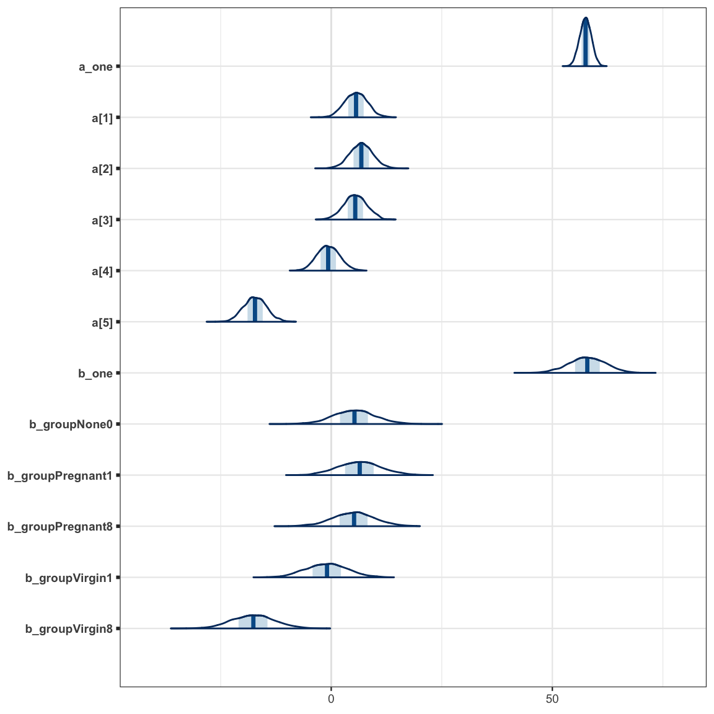
As we can see, the modes of the posteriors for the a and b parameters are similar
(because the prior on b_one kept b_one from drifting too far from where
a_one is centered), but the posteriors for the a parameters are significantly
narrower, so the conversion from b’s to a’s is important.
19.5 Comparing groups
19.5.1 Comparing to the “intercept group”
Let’s return to model 2.
stanfit(flies2_brm)## Inference for Stan model: bf639a104df81234b81629296b75e83c.
## 4 chains, each with iter=2000; warmup=1000; thin=1;
## post-warmup draws per chain=1000, total post-warmup draws=4000.
##
## mean se_mean sd 2.5% 25% 50% 75% 97.5% n_eff Rhat
## b_Intercept 61.64 0.05 2.62 56.42 59.86 61.62 63.42 66.65 2955 1
## b_groupPregnant1 2.84 0.06 3.73 -4.41 0.34 2.82 5.29 10.03 3753 1
## b_groupPregnant8 1.55 0.06 3.71 -5.42 -1.04 1.60 4.06 8.70 3533 1
## b_groupVirgin1 -4.43 0.06 3.74 -11.74 -6.95 -4.44 -1.88 3.00 3461 1
## b_groupVirgin8 -21.03 0.06 3.78 -28.39 -23.60 -21.08 -18.46 -13.60 3905 1
## sigma 14.95 0.01 0.96 13.23 14.30 14.91 15.57 16.97 4553 1
## lp__ -543.20 0.04 1.76 -547.54 -544.10 -542.84 -541.91 -540.82 1860 1
##
## Samples were drawn using NUTS(diag_e) at Wed Apr 24 08:17:51 2019.
## For each parameter, n_eff is a crude measure of effective sample size,
## and Rhat is the potential scale reduction factor on split chains (at
## convergence, Rhat=1).In this model, one group corresponds to the intercept of the model, and comparisons of other groups to this group is a matter of investigating the posterior distribution of one of the other \(\beta\)’s.
flies_post <- posterior(flies_stan)
names(flies_post)## [1] "b_Intercept" "b_groupPregnant1" "b_groupPregnant8" "b_groupVirgin1" "b_groupVirgin8"
## [6] "sigma" "lp__" "chain" "iter"plot_post(flies_post$b_groupPregnant1)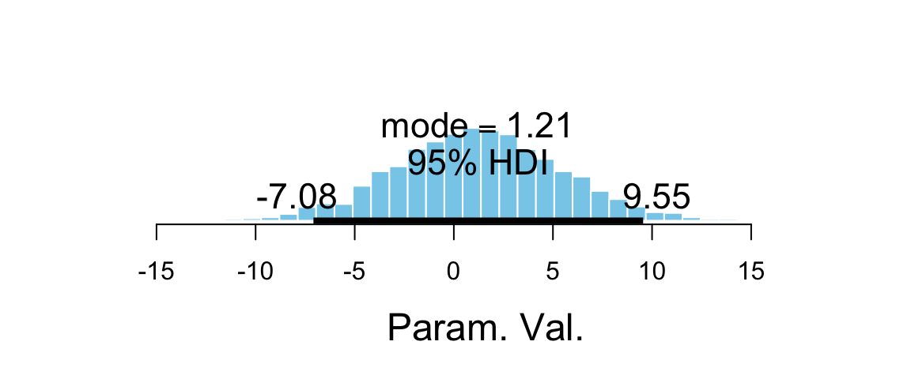
## $posterior
## ESS mean median mode
## var1 2985 1.208 1.162 1.206
##
## $hdi
## prob lo hi
## 1 0.95 -7.082 9.551hdi(flies_post$b_groupPregnant1)| par | lo | hi | prob |
|---|---|---|---|
| var1 | -7.082 | 9.551 | 0.95 |
plot_post(flies_post$b_groupVirgin1)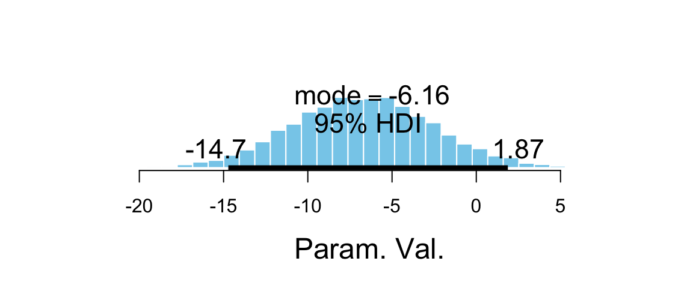
## $posterior
## ESS mean median mode
## var1 3040 -6.895 -7.003 -7.352
##
## $hdi
## prob lo hi
## 1 0.95 -15.01 1.409mcmc_areas(as.mcmc.list(flies_stan), pars = "b_groupVirgin1", prob = 0.95)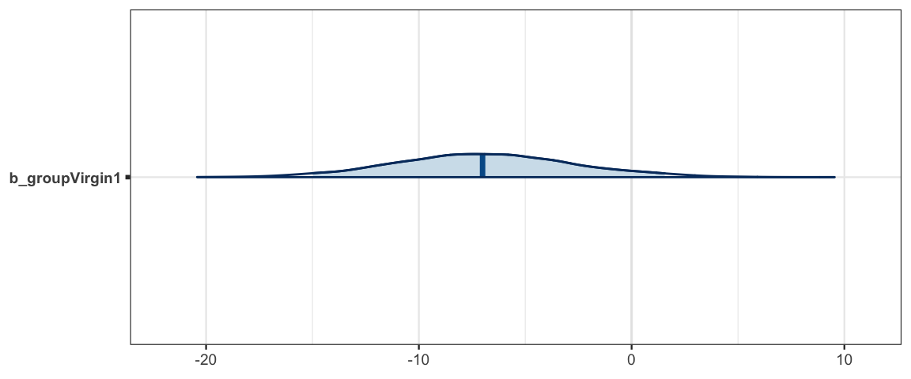
hdi(flies_post$b_groupVirgin1)| par | lo | hi | prob |
|---|---|---|---|
| var1 | -15.01 | 1.409 | 0.95 |
19.5.2 Comparing others pairs of groups
What if we want to compare the Virgin1 and Virgin8 groups?
We can use the identity \(\beta_0 + \beta_i - (\beta_0 + \beta_j) = \beta_i - \beta_j\)
to simplify the algebra and do it this way. (The same would work in model 3 or 4 as well.)
flies_post <-
flies_post %>% mutate(dVirgin = b_groupVirgin8 - b_groupVirgin1)
plot_post(flies_post$dVirgin, xlab = "Virgin8 - Virgin1")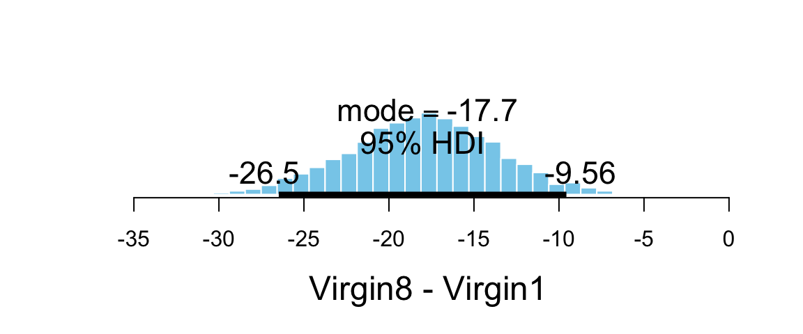
## $posterior
## ESS mean median mode
## var1 4997 -17.93 -17.9 -17.77
##
## $hdi
## prob lo hi
## 1 0.95 -26.78 -10.2919.5.3 Contrasts: Comparing “groups of groups”
What if we want to compare the two virgin groups to the 3 other groups? This is a bit simpler to do using the model without an intercept term.
flies3_post <- posterior(flies3_brm)
names(flies3_post)## [1] "b_groupNone0" "b_groupPregnant1" "b_groupPregnant8" "b_groupVirgin1" "b_groupVirgin8"
## [6] "sigma" "prior_b" "prior_sigma" "lp__"flies3_post <-
flies3_post %>%
mutate(
contrast =
(b_groupVirgin8 + b_groupVirgin1)/2 -
(b_groupPregnant1 + b_groupPregnant8 + b_groupNone0) / 3
)
plot_post(flies3_post$contrast, xlab = "Virgin vs non-virgin groups")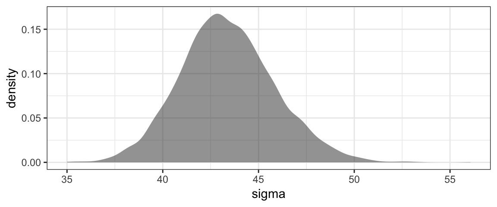
## $posterior
## ESS mean median mode
## var1 5960 -14.84 -14.85 -14.56
##
## $hdi
## prob lo hi
## 1 0.95 -19.64 -9.521The expression
\[\begin{align*} \frac{\mu_3 + \mu_4}{2} - \frac{\mu_0 + \mu_1 + \mu_2}{3} &= -\frac13 \mu_0 -\frac13 \mu_1 -\frac13 \mu_2 + \frac12 \mu_3 + \frac12 \mu_4 \end{align*}\]
is an example of a contrast. A contrast is simply a linear combination of the
group means such that the sum of the coefficients is 0. Many interesting relationships
can be investigated using contrasts, and the brms package includes the hypothesis()
function to help us do this. (Note: because we included sample_prior = TRUE in the
call to brm() for this model, the plot below shows both prior and posterior distributions
for the contrast.)
h <-
hypothesis(
flies3_brm,
"(groupVirgin8 + groupVirgin1) / 2 <
(groupPregnant1 + groupPregnant8 + groupNone0) / 3"
)
h## Hypothesis Tests for class b:
## Hypothesis Estimate Est.Error CI.Lower CI.Upper Evid.Ratio Post.Prob Star
## 1 ((groupVirgin8+gr... < 0 -14.84 2.58 -Inf -10.53 Inf 1 *
## ---
## '*': The expected value under the hypothesis lies outside the 95%-CI.
## Posterior probabilities of point hypotheses assume equal prior probabilities.plot(h)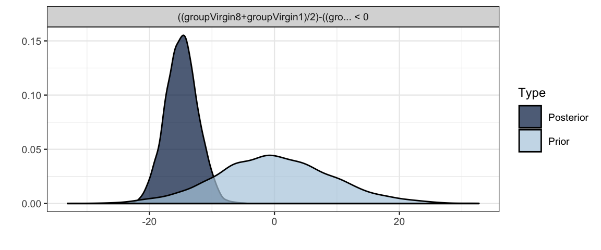
19.5.3.1 Multiple Hypotheses at once
We can even test multiple hypotheses at once.
h2 <-
hypothesis(
flies3_brm,
c("groupVirgin1 < (groupPregnant1 + groupPregnant8 + groupNone0) / 3",
"groupVirgin8 < (groupPregnant1 + groupPregnant8 + groupNone0) / 3")
)
h2## Hypothesis Tests for class b:
## Hypothesis Estimate Est.Error CI.Lower CI.Upper Evid.Ratio Post.Prob Star
## 1 (groupVirgin1)-((... < 0 -6.57 3.24 -Inf -1.21 37.46 0.97 *
## 2 (groupVirgin8)-((... < 0 -23.12 3.33 -Inf -17.60 Inf 1.00 *
## ---
## '*': The expected value under the hypothesis lies outside the 95%-CI.
## Posterior probabilities of point hypotheses assume equal prior probabilities.plot(h2)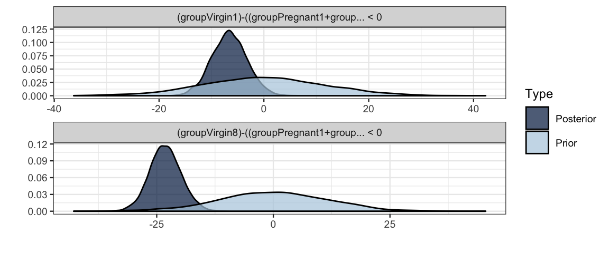
19.5.3.2 Equality or inequality?
In the previous example, we expressed our contrast as an inequality. We can also express it
as an equality. The output that we get from hypothesis() is a bit different if we do so.
h3 <-
hypothesis(
flies3_brm,
c("groupVirgin1 = (groupPregnant1 + groupPregnant8 + groupNone0) / 3",
"groupVirgin8 = (groupPregnant1 + groupPregnant8 + groupNone0) / 3")
)
h3## Hypothesis Tests for class b:
## Hypothesis Estimate Est.Error CI.Lower CI.Upper Evid.Ratio Post.Prob Star
## 1 (groupVirgin1)-((... = 0 -6.57 3.24 -13.02 0.08 0.43 0.3
## 2 (groupVirgin8)-((... = 0 -23.12 3.33 -29.55 -16.69 0.00 0.0 *
## ---
## '*': The expected value under the hypothesis lies outside the 95%-CI.
## Posterior probabilities of point hypotheses assume equal prior probabilities.plot(h3)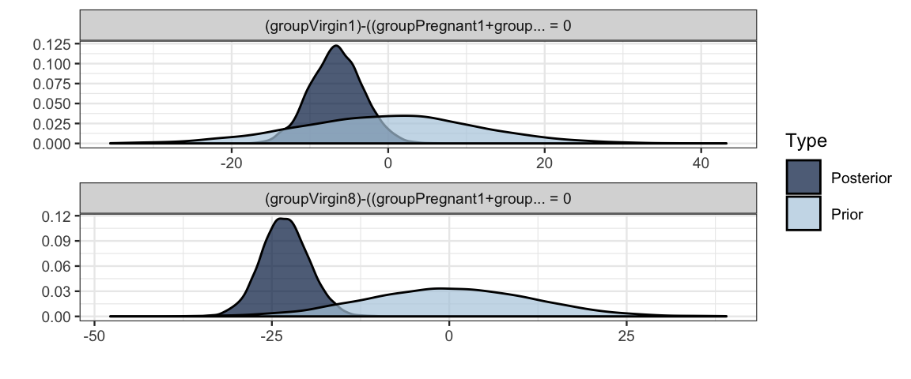
- The CI is 2-sided rather than 1-sided.
- Evidence Ratio is defined differently.
- For inequalities, this is the ratio of the posterior probabilities for the inequality being true vs. false
- For equalities, this is the ratio of the posterior density (of the equality
holding) to the prior density. (This only works if
sample_prior = TRUEsince prior samples are required to make the calculation.)
19.6 More Variations
The models we have looked at above are very similar to a traditional ANOVA model, the key features of which are
- normal distributions for each group (normal noise), and
- same standard deviation in each group (homoskedasticity).
In frequentist statistics, these are largely chosen for convenience (the mathematics is much easier). But we can easily relax these restrictions using Bayesian software. Let’s fit a model using
t distributions instead normal distributions for the noise.
This will make the results more robust against outliers in our sample or distributions with heavier tails.
different standard deviation parameters for each group.
Both are easy to do with brm(). The main new feature is the use
of bf() to provide two formulas. The first describes the mean response (separate
means for each group). The second formula describes sigma (separate values for
each group). The rest should look familiar.
flies5_brm <-
brm(
bf(longevity ~ 0 + group, sigma ~ 0 + group),
data = FruitflyReduced,
family = student(), # t distribution for the noise
prior = c(
set_prior(class = "b", "normal(60, 10)")
),
sample_prior = TRUE
)## Compiling the C++ model## Start samplingThe Stan code for this model includes the following model section.
model {
vector[N] mu = X * b;
vector[N] sigma = X_sigma * b_sigma;
for (n in 1:N) {
sigma[n] = exp(sigma[n]);
}
// priors including all constants
target += normal_lpdf(b | 60, 10);
target += gamma_lpdf(nu | 2, 0.1)
- 1 * gamma_lccdf(1 | 2, 0.1);
// likelihood including all constants
if (!prior_only) {
target += student_t_lpdf(Y | nu, mu, sigma);
}
}Note that the values of sigma are on the log scale and are converted (via exp())
to the natural scale before using them in the likelihood function.
The sort of encoding of groups is used for (log) sigma as was used for the
group means. Because we included 0 in our formula, we get a (log) sigma for
each group.
This is reported in the summary output for the brm model as a log link for sigma.
flies5_brm## Family: student
## Links: mu = identity; sigma = log; nu = identity
## Formula: longevity ~ 0 + group
## sigma ~ 0 + group
## Data: FruitflyReduced (Number of observations: 125)
## Samples: 4 chains, each with iter = 2000; warmup = 1000; thin = 1;
## total post-warmup samples = 4000
##
## Population-Level Effects:
## Estimate Est.Error l-95% CI u-95% CI Eff.Sample Rhat
## groupNone0 63.01 3.25 56.56 69.12 8719 1.00
## groupPregnant1 64.17 3.24 57.83 70.48 7598 1.00
## groupPregnant8 63.38 2.96 57.52 69.01 8003 1.00
## groupVirgin1 57.14 2.86 51.56 62.60 7448 1.00
## groupVirgin8 40.09 2.51 35.23 45.18 6611 1.00
## sigma_groupNone0 2.78 0.15 2.51 3.10 7918 1.00
## sigma_groupPregnant1 2.74 0.16 2.45 3.07 7298 1.00
## sigma_groupPregnant8 2.67 0.16 2.38 2.99 6365 1.00
## sigma_groupVirgin1 2.68 0.16 2.39 3.00 7954 1.00
## sigma_groupVirgin8 2.49 0.16 2.20 2.81 8157 1.00
##
## Family Specific Parameters:
## Estimate Est.Error l-95% CI u-95% CI Eff.Sample Rhat
## nu 27.54 14.49 8.31 63.88 6495 1.00
##
## Samples were drawn using sampling(NUTS). For each parameter, Eff.Sample
## is a crude measure of effective sample size, and Rhat is the potential
## scale reduction factor on split chains (at convergence, Rhat = 1).mcmc_areas_ridges(as.mcmc.list(stanfit(flies5_brm)), regex_pars = "sigma")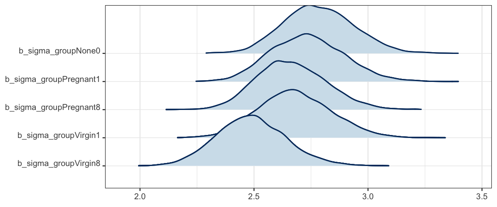
In this case, it doesn’t appear that there is a large difference among the (log) standard deviations in the five groups, but it is noteable that the group with the lowest longevity also has the smallest standard deviation. It is not uncommon for variability to larger when values are larger. Fortunately, it is no harder to fit a model with separate standard deviations than with one standard deviation for all of the groups. And if there substantial differences in the standard deviations, a model that takes that into account will perform better.
If we prefer to see the standard deviations on the natural scale, we can tell Stan to compute and store those values. The naming isn’t quite as nice, however.
flies5a_brm <-
brm(
bf(longevity ~ 0 + group, sigma ~ 0 + group),
data = FruitflyReduced,
family = student(), # t distribution for the noise
prior = c(
set_prior(class = "b", "normal(60, 10)")
),
sample_prior = TRUE,
stanvars =
stanvar(
scode = "vector[K_sigma] b_rsigma = exp(b_sigma);",
block = "genquant")
)## Compiling the C++ model## Start samplingflies5a_stan <- stanfit(flies5a_brm)
mcmc_areas_ridges(as.mcmc.list(flies5a_stan), regex_pars = "rsigma")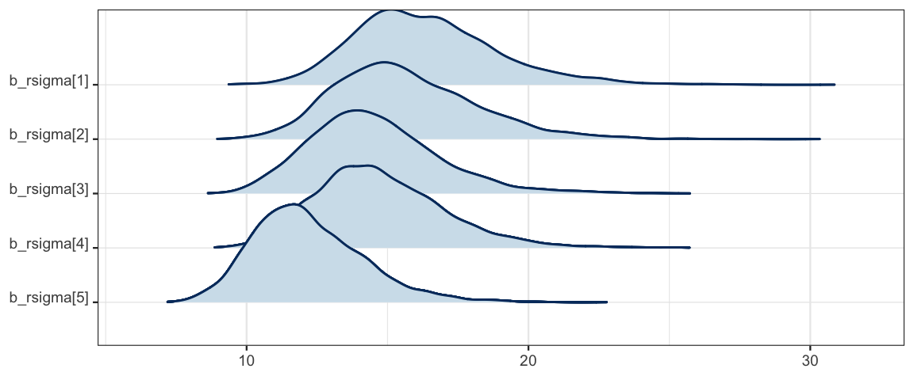
hdi(posterior(flies5a_stan), regex_pars = "rsigma")| par | lo | hi | prob |
|---|---|---|---|
| b_rsigma.1 | 11.919 | 21.74 | 0.95 |
| b_rsigma.2 | 11.069 | 20.47 | 0.95 |
| b_rsigma.3 | 10.220 | 19.16 | 0.95 |
| b_rsigma.4 | 10.580 | 19.42 | 0.95 |
| b_rsigma.5 | 8.795 | 16.05 | 0.95 |
19.7 Exercises
It turns out that larger fruit flies tend to live longer. we can take this into account by adding
thorax(the length of each fruit fly’s thorax in mm) to our model. Since we are primarily interested in the association betweengroupand longevity,thoraxis referred to as a covariate. But if we were primarily interested in the relationship between longevity and size, we could use the same model and callgroupthe covariate. Same model, different focus.Fit two models: Let Model 1 be the model below and let Model 2 be one just like it but without
thorax. Then answer the questions that follow. We’ll stick with the default priors for now, but it would be easy enough to choose your own.model1_brm <- brm( bf(longevity ~ group + thorax, sigma ~ group + thorax), data = FruitflyReduced, family = student(), )Does Model 1 think that longevity is different for large and small fruit flies? How do you know? How can you quantify your answer?
We are primarily interested in whether the fruit flies that live with virgin females live less long than the others (those that live alone or with pregnant females). Using each model, compute a 95% HDI for the contrast that measures this. For Model 1, does it matter what value
thoraxhas? (If yes, usethorax = 0.8as an example.) How do the two HDI’s compare? Why?Using each model, compute a 95% HDI for the contrast that compares just the Virgin1 flies to the three types of controls (None0, Pregnant1, and Pregnant8). How do the two models compare?
Now compare the values for
sigmain the two models. To do this, we will need to specify both the group and the thorax size (since for different combinations of these the models estimate different values ofsigma). For each of the combinations below, compute a 95% HDI forsigmain two models, one withthoraxand one without. Don’t forget to convert to the natural scale. (Recall thatbrm()uses a log link forsigma.)- group: Pregnant1; thorax: 0.7mm, 0.8mm, 0.9mm [That’s three different HDI’s for Model 1 and the same HDI 3 times for Model 2.]
- group: Virgin8; thorax: 0.7mm, 0.8mm, 0.9mm
How do the results compare for the two models?
Given the results above, is it important to include
thoraxin the model? Explain.Bonus (optional): Create a plot that shows the HDIs for
sigmafor every combination of model, group, and thorax measurement of 0.6, 0.7, 0.8, or 0.9 mm.